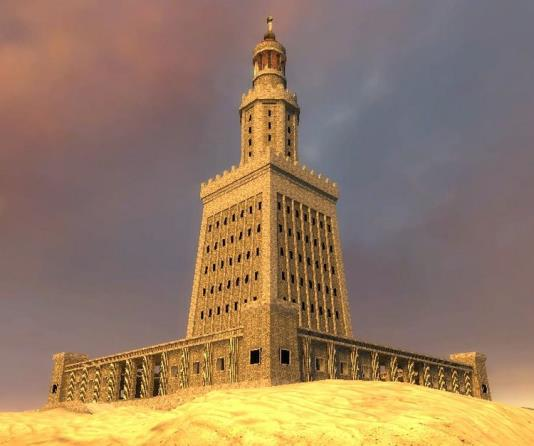
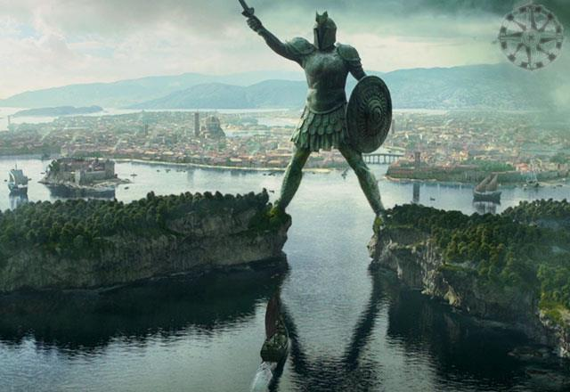
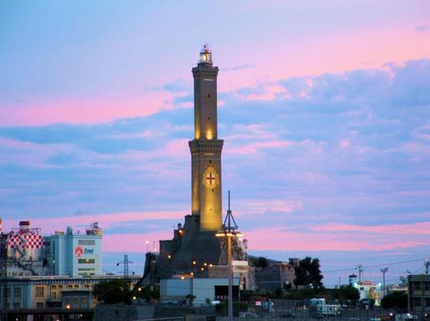
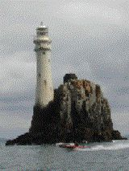

Origen del Primer Faro
El origen de las señales marítimas se remonta a los primeros esfuerzos de navegación, cuando se ubicaban accidentes naturales del paisaje, como ensenadas, arrecifes o cabos, para la orientación diurna. Ejemplos como el pico Teide eran puntos de referencia, aunque la homogeneidad de algunas costas dificulta su identificación. Esto dio lugar a la creación de señales artificiales, destacando las columnas de Hércules, cuya existencia es debatida.
Con la expansión del comercio y la necesidad de navegar distancias mayores, las señales naturales resultaron insuficientes, por lo que se utilizaron hogueras en ubicaciones estratégicas visibles por la noche. Para mejorar la visibilidad y proteger las hogueras de los temporales, se construyeron estructuras artificiales, que fueron mejorando con los avances en navegación. Posteriormente, se incorporaron superficies reflectoras para amplificar la luz y aumentar su alcance. Estas innovaciones requieren personal encargado de mantener las instalaciones para garantizar la seguridad de los navegantes.
Funciones
Primero que nada, se emplea para ayudar a la navegación marítima, procurando iluminar las costas peligrosas y evitando que estas embarcaciones colisionen contra arrecifes, etc. Ofrecen servicios de búsqueda y rescate, y también emiten alertas de tsunami.
Faros Representativos a Través de las Épocas
Época Antigua
El Faro de Alejandría

El Faro de Alejandría, erigido en la isla de Faros durante el reinado de Ptolomeo II y diseñado por el ingeniero Sóstrato de Cnido, fue una de las construcciones más representativas del mundo antiguo. Con una altura aproximada de 180 metros y una planta cuadrada, la estructura albergaba una mezquita en su cima y un sistema de iluminación ideado por Arquímedes que facilitaba la detección de embarcaciones enemigas.
Coloso de Rodas

Considerada una de las Siete Maravillas del Mundo Antiguo, no se tiene certeza de si el Coloso de Rodas fue utilizado como faro. La leyenda se sostiene debido a que los barcos que ingresaban al puerto pasaban cerca de la estatua, y además era visible desde gran parte del horizonte.
Época Medieval
Faro de Génova

El Faro de Génova, conocido como "La Linterna", inicialmente formaba parte de las defensas de la ciudad y más tarde se transformó en una señal marítima. Con una altura de 75 metros, fue considerado el faro más alto del mundo. Además, se utilizaba como torre de vigilancia y se comunicaba con el Faro de Livorno mediante señales de humo, complementándose con un sistema de banderas para alertar sobre la presencia de embarcaciones enemigas.
Faro Fastnet Rock

La roca de Fastnet es un arrecife peligroso rodeado por aguas profundas, ubicado a cuatro millas de Cabo Clear, en el extremo suroeste de Irlanda. En 1854 se construyó una torre cilíndrica en la cima de la roca, pero presentaba serios problemas de estabilidad debido a los impactos de las olas y las rocas arrastradas.